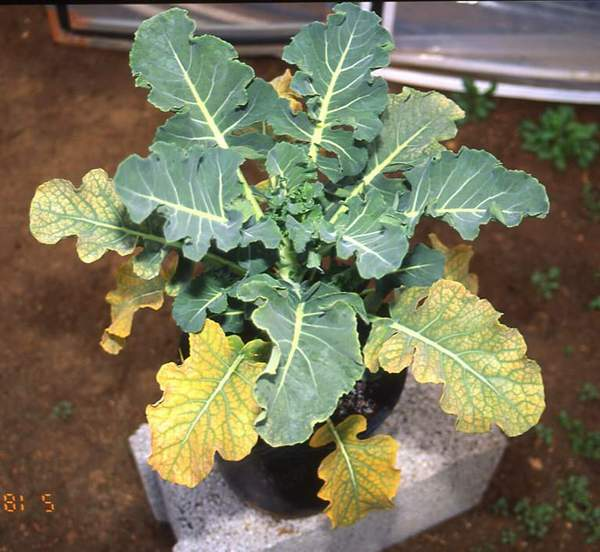
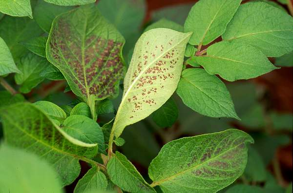
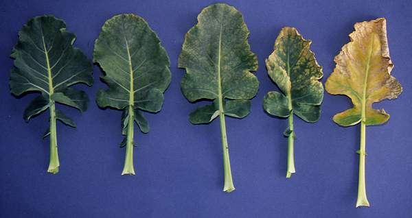
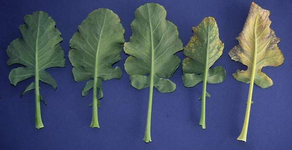
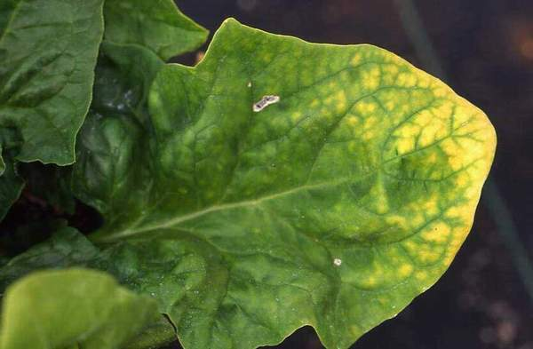
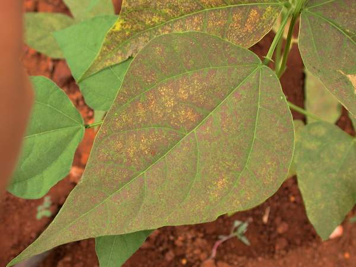

Load an image

Damage:
Ozone Factor:
Injury Class:
Submit
Damage:
Injury class:
How to Recognize Ozone Symptoms The following general guidelines can be given to identify ozone symptoms in plants Symptoms identification for crops speciesVisible ozone-like symptoms can be identified and distinguished from symptoms caused by other biotic/abiotic factors by following the general guide lines as described below:
 Detail of broccoli plant fumigation with ozone in OTC’s; only old leaves are affected (Photo: M.J. Sanz)
 Ozone symptoms in potato plant fumigated with ozone in OTC’s, note that shaded portions of leaves remain greener, less affected by ozone (Photo: I. Calvo)
 Different gradation of ozone symptoms in upper surface of broccoli leaves (Photo: M.J. Sanz)  Undersides of the above leaves, note than despite the severe injury showed in the upper side of the leaves its lower side remain unaffected (Photo: M.J. Sanz)
 Typical interveinal ozone symptoms induced in spinach leaf (Photo: E. Calvo)  Typical pigmented sttipling induce by ozone exposure in OTC of bean plants (Photo: E. Calvo) © 2009 Fundación CEAM © 2009 Copyright of the photos: their authors |
Descripcion del proyecto.
Developer: Rafa
Developer: Jeancarlo
Developer: Antonio Zamora
Space App Challenge 2015. ITCR, Costa Rica.